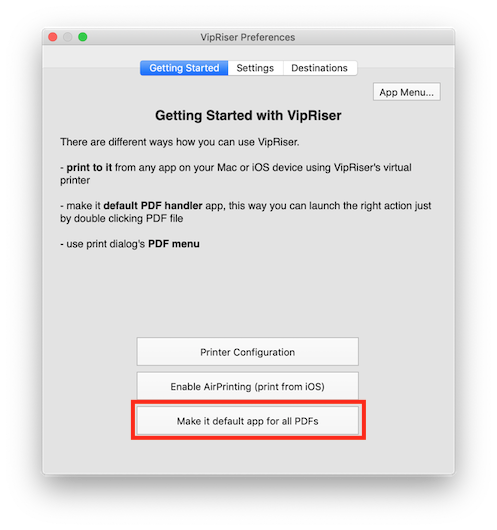
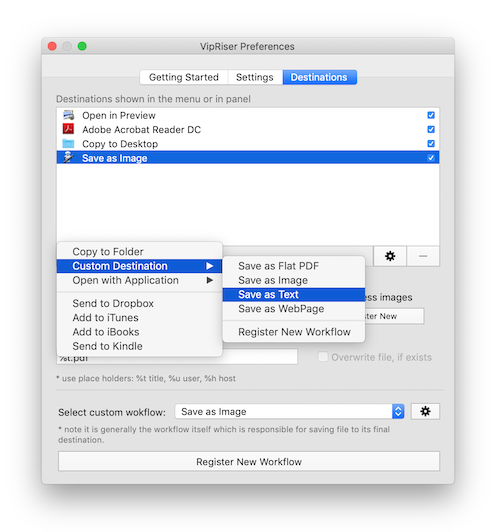
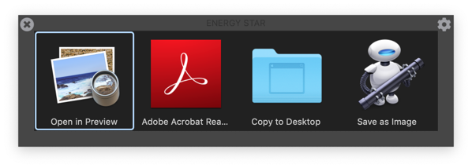

Action Menu for PDF Files
Although VipRiser is mainly intended as virtual print driver, it can be used as super convenient action menu for any PDF file.
Once you install the app, make it default handler for PDF files.

Any time you double a PDF file, VipRiser will ask you what to do with the file. You can configure available actions in the destination tab.

You can add VipRiser PDF Ops or any other workflows, special destinations like Kindle or iBooks or other applications that can handle PDF files. Once you double click any PDF file, VipRiser will ask you what action to want to perform.
